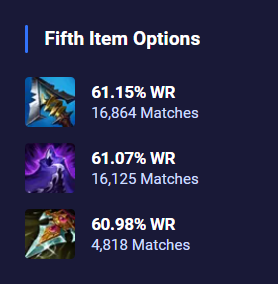
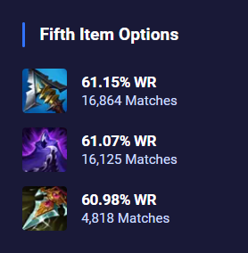

Kayn is very weak without a transformation and the number of junglers he can confidently duel at Scuttler during the early game is very small. To get a transformation, Kayn has to damage an enemy champion to obtain Darkin Scythe passive stacks. Damaging melee champions grants him the Rhaast Kayn transformation stacks. On the other hand, doing damage to ranged champions grants him the Shadow Assassin Kayn transformation stacks.
It is important to pre-plan your jungle route so that you can path towards the lane with enemy champions that you need to damage for the transformation of your choice.
Reaping Slash can be used to jump over quite a few walls and when it is combined with Shadow Step, their proper use makes Kayn a high mobility champion with a lot of easy ways to control team fights and steal jungle objectives.
Umbral Trespass is Kayn's most valuable spell. With proper timing it can be used to quickly dodge enemy skill shots, and it is worth noting that it is possible to cast Smite while you're inside an enemy— allowing for easy Baron & Dragon steals.


 
